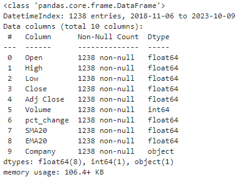

2 Data
This project will be focused on predicting the percent price change on a given day from historical financial data markets. For this analysis, we’ll be using historical time-series data for Apple, a corporation listed on the New York Stock Exchange. That company is Apple, and we chose Apple due to its high trading volume and relatively low volatility. At the end of our analysis, we’ll also compare the results to a second company also traded on the NYSE, General Motors.
We decided to pull data going back the last 5 years, although this was an arbitrary decision. The data is sourced from Yahoo Finance using the yfinance package in python. yfinance is an open-source package that uses Yahoo Finance’s publicly available APIs to download market data.
The resulting data file is relatively simple, comprised of only seven columns, with each row representing an individual trading day going back to five years. The NYSE is only open on weekdays, excluding most Federal holidays. Thus, our data set contains 1,257 trading days, the amount of days in the last five years the stock market was at least partially open.
2.1 Standard Variables
Date : This represents a specific trading day that the market was at least partially open.
Open : The price at the time of market opening on the given day.
High : The highest price that the stock reached on the given day.
Low : The lowest price that the stock reached on the given day.
Close : The price at the time of market closing on the given day.
Adj Close : The closing stock price adjusted for any corporate actions such as dividends and stock splits.
Volume : The total number of shares traded on the given day.
Table 1: Preview of the first 5 rows of the dataset
2.2 Additional Variables
In addition to the variables to the standard variables fetched from the Yahoo Finance API, we created four of our own columns to add to the dataset.
Company Name : This variable simply denotes the company name that the data set belongs to.
Percent Change : This variable calculates what percent the price changed from the previous closing price.
It’s important because we are trying to predict what percent the price will shift.
The percent change variable was created using the pandas “pct_change” command, applying it to the closing price only going back one period, thus creating a variable showing what percent the price moved each trading day, compared to the previous trading day.
AAPL['pct_change'] = AAPL.Close.pct_change(periods = 1)
Simple Moving Average : A simple moving average (SMA) is created by taking the mean closing price of a stock over a given number of periods. We created the SMA going back 20 time periods, so that each value represents the average closing price of the last 20 trading days.
This variable was created by using the pandas “rolling” command going back 20 periods. Because the first 19 days of the dataset (the oldest ones) do not have 20 previous periods to look to, they will instead have NULL values. We’ll drop those 19 rows so that our dataset contains no null values.
AAPL['SMA20'] = AAPL['Close'].rolling(20).mean()
Exponential Moving Average : Given that we are trying to predict the price change of a stock in the short-term, exponential weighted moving averages (EMA) provide a benefit that SMA’s do not. We can generally assume that tomorrow’s stock price for a given company is going to be influenced by today’s closing price as compared to the closing price 20 days ago, SMA’s contain an inherent weakness for our analysis. SMA’s weigh each price point the same, so that in a 20 series average, each price point is weighed at an even 5%. EMA’s give additional weight to the most recent days, so day 20 will have a higher weight than day 19, which will have a higher weight than day 18, and so on.
This variable was created by using the pandas “ewm” command going back 20 periods.
AAPL['EMA20'] = AAPL['Close'].ewm(span=20).mean()
2.3 Data Summary & Visualizations
We know that outside of the date variable, which acts as the index for this dataset, there are 6 other data points that came from the API. We created four more variables and dropped null values. Our resulting dataset contains 1,238 trading days. We can tell from using the pandas “info” command that all the variables are floats, with the exception of volume, which is an integer, and company name, which is an object. We also verify that there are no null values in our data.

Graphic 1: Dataframe information of the dataset
By running the “describe” function, we can get a better idea of our dataset.
Table 2: Summary statistics of the dataset
During our five-year period, Apple’s closing price has ranged from $34.16 to $196.19, with the mean closing price being $117.78 and the median closing price at $130.86.
When we plot the closing price by date, we can see that the price has been moving steadily upwards throughout the five year period, with occasional decreases.
Graphic 2: Closing price by day for AAPL
From the “describe” function pictured above, we can also tell that the percent change of the stock price has ranged as low as 12.8% lower from the previous trading days closing price, to as high as 11.9% higher. As we are trying to predict percent change, it was important to see a histogram of the datapoint.
Graphic 3: Histogram of the daily percent change for AAPL
The histogram shows that the data is pretty evenly distributed, with a slight right tail.